Code
library(mirt)
library(ggplot2)
library(dplyr)
library(tidyr)Scoring with MLE, MAP, and EAP
In Item Response Theory (IRT), once we have estimated item parameters, we need a method to estimate person parameters (theta, \(\theta\)). This process is often called “scoring.” This document covers three primary approaches:
We’ll use data from 31 multiple-choice mathematics items administered as part of a Colorado state achievement test.
library(mirt)
library(ggplot2)
library(dplyr)
library(tidyr)cde <- read.csv("/Users/briggsd/Library/CloudStorage/Dropbox/Courses/EDUC 8720/Data Sets/MASC-CDE/cde_subsample_math.csv")
dim(cde)[1] 1500 31We have 1500 students and 31 dichotomously scored items.
The likelihood expresses the probability of observing the data, conditional on a particular model and its parameters. For IRT:
For a test with \(J\) items, where the response to item \(j\) is \(u_j\) (either 0 or 1), the likelihood of a response vector is:
\[L(\theta | \mathbf{u}) = \prod_{j=1}^{J} P_j(\theta)^{u_j} Q_j(\theta)^{1-u_j}\]
Where:
The log-likelihood is:
\[\ell(\theta | \mathbf{u}) = \sum_{j=1}^{J} \left[ u_j \ln P_j(\theta) + (1-u_j) \ln Q_j(\theta) \right]\]
Let’s illustrate with a simple two-item test using the 2PL model. Suppose:
# 2PL probability function
p_2pl <- function(theta, a, b) {
1 / (1 + exp(-a * (theta - b)))
}
# Item parameters
a1 <- 1; b1 <- 0
a2 <- 2; b2 <- 2
# Create theta range
theta_range <- seq(-4, 4, by = 0.01)
# Calculate probabilities for each item
p1 <- p_2pl(theta_range, a1, b1)
p2 <- p_2pl(theta_range, a2, b2)
q1 <- 1 - p1
q2 <- 1 - p2Thor gets the first item correct and the second item incorrect.
# Likelihood for pattern (1,0)
L_thor <- p1 * q2
# MLE estimate
mle_thor <- theta_range[which.max(L_thor)]
# Plot
par(mfrow = c(2, 1), mar = c(4, 4, 3, 1))
# Top panel: Both probability curves on same plot
plot(theta_range, p1, type = "l", col = "blue", lwd = 2,
xlab = expression(theta), ylab = "Probability",
main = "Thor (1-0): Probability Functions for Each Item",
ylim = c(0, 1), las = 1)
lines(theta_range, q2, col = "red", lwd = 2)
legend("right", legend = c(expression(P[1](theta)~"= P(Item 1 Correct)"),
expression(Q[2](theta)~"= P(Item 2 Incorrect)")),
col = c("blue", "red"), lwd = 2, cex = 0.9, bty = "n")
# Bottom panel: Likelihood function
plot(theta_range, L_thor, type = "l", col = "purple", lwd = 2,
xlab = expression(theta), ylab = "Likelihood",
main = expression("Likelihood: "*L(theta)*" = "*P[1](theta) %*% Q[2](theta)),
las = 1)
abline(v = mle_thor, lty = 2, col = "gray40")
text(mle_thor + 0.5, max(L_thor) * 0.9,
paste("MLE =", round(mle_thor, 2)), cex = 0.9)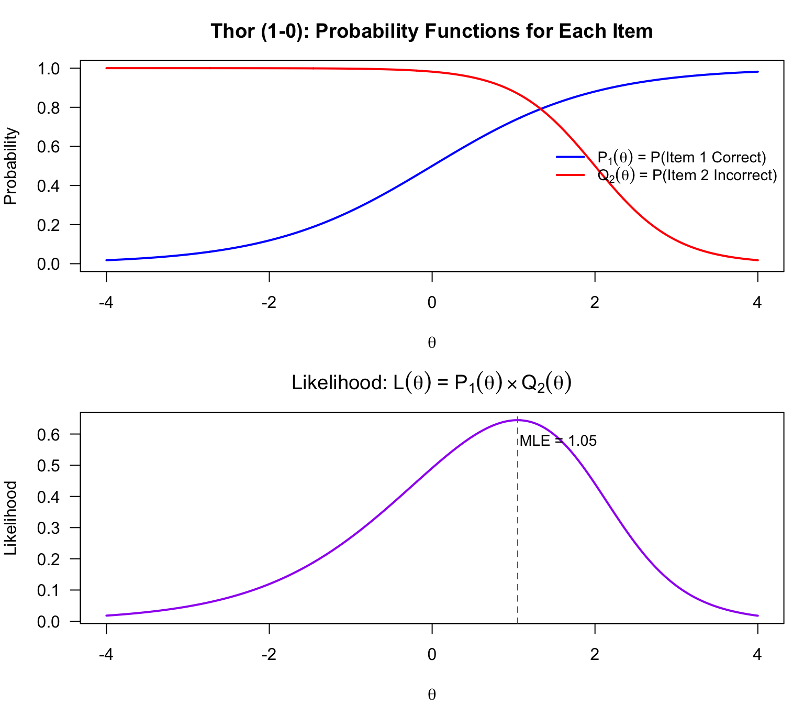
The MLE for Thor is approximately \(\hat{\theta} = 1.05\).
Storm gets the first item incorrect and the second item correct.
# Likelihood for pattern (0,1)
L_storm <- q1 * p2
# MLE estimate
mle_storm <- theta_range[which.max(L_storm)]
# Plot
par(mfrow = c(2, 1), mar = c(4, 4, 3, 1))
# Top panel: Both probability curves on same plot
plot(theta_range, q1, type = "l", col = "blue", lwd = 2,
xlab = expression(theta), ylab = "Probability",
main = "Storm (0-1): Probability Functions for Each Item",
ylim = c(0, 1), las = 1)
lines(theta_range, p2, col = "red", lwd = 2)
legend("right", legend = c(expression(Q[1](theta)~"= P(Item 1 Incorrect)"),
expression(P[2](theta)~"= P(Item 2 Correct)")),
col = c("blue", "red"), lwd = 2, cex = 0.9, bty = "n")
# Bottom panel: Likelihood function
plot(theta_range, L_storm, type = "l", col = "purple", lwd = 2,
xlab = expression(theta), ylab = "Likelihood",
main = expression("Likelihood: "*L(theta)*" = "*Q[1](theta) %*% P[2](theta)),
las = 1)
abline(v = mle_storm, lty = 2, col = "gray40")
text(mle_storm + 0.5, max(L_storm) * 0.9,
paste("MLE =", round(mle_storm, 2)), cex = 0.9)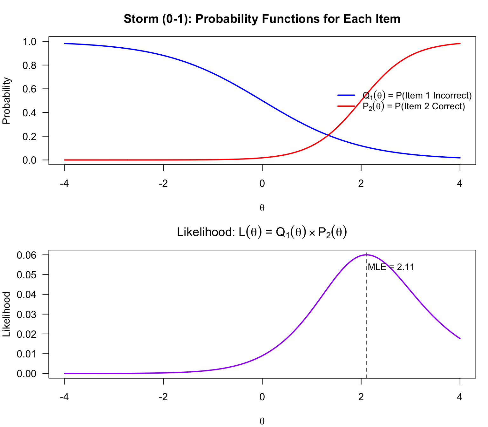
Key insight: Under the 2PL, Thor and Storm have the same raw score (1 out of 2) but different theta estimates! Storm receives more “credit” for getting the more discriminating item correct. This is a fundamental difference between IRT scoring and classical test theory scoring.
Wonder Woman gets both items correct.
# Likelihood for pattern (1,1)
L_ww <- p1 * p2
# Plot
par(mfrow = c(2, 1), mar = c(4, 4, 3, 1))
# Top panel: Both probability curves on same plot
plot(theta_range, p1, type = "l", col = "blue", lwd = 2,
xlab = expression(theta), ylab = "Probability",
main = "Wonder Woman (1-1): Probability Functions for Each Item",
ylim = c(0, 1), las = 1)
lines(theta_range, p2, col = "red", lwd = 2)
legend("right", legend = c(expression(P[1](theta)~"= P(Item 1 Correct)"),
expression(P[2](theta)~"= P(Item 2 Correct)")),
col = c("blue", "red"), lwd = 2, cex = 0.9, bty = "n")
# Bottom panel: Likelihood function
plot(theta_range, L_ww, type = "l", col = "purple", lwd = 2,
xlab = expression(theta), ylab = "Likelihood",
main = expression("Likelihood: "*L(theta)*" = "*P[1](theta) %*% P[2](theta)),
las = 1)
text(2, max(L_ww) * 0.7, "No maximum!\nLikelihood increases\nas θ → ∞", cex = 0.9)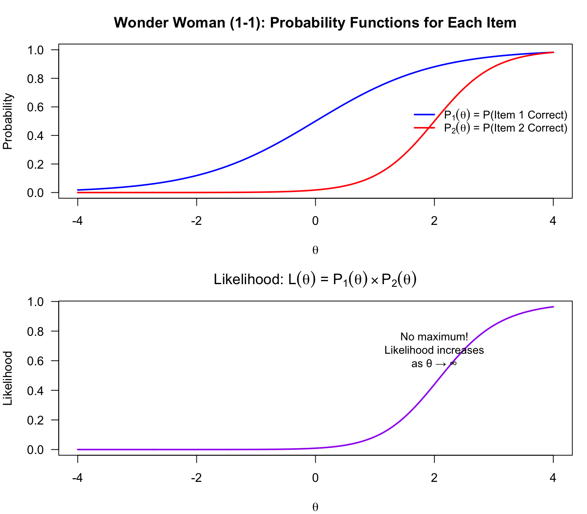
Problem: No maximum likelihood estimate exists! The likelihood keeps increasing as theta approaches positive infinity. This is a fundamental limitation of MLE scoring for perfect response patterns.
Hulk gets both items incorrect.
# Likelihood for pattern (0,0)
L_hulk <- q1 * q2
# Plot
par(mfrow = c(2, 1), mar = c(4, 4, 3, 1))
# Top panel: Both probability curves on same plot
plot(theta_range, q1, type = "l", col = "blue", lwd = 2,
xlab = expression(theta), ylab = "Probability",
main = "Hulk (0-0): Probability Functions for Each Item",
ylim = c(0, 1), las = 1)
lines(theta_range, q2, col = "red", lwd = 2)
legend("topright", legend = c(expression(Q[1](theta)~"= P(Item 1 Incorrect)"),
expression(Q[2](theta)~"= P(Item 2 Incorrect)")),
col = c("blue", "red"), lwd = 2, cex = 0.9, bty = "n")
# Bottom panel: Likelihood function
plot(theta_range, L_hulk, type = "l", col = "purple", lwd = 2,
xlab = expression(theta), ylab = "Likelihood",
main = expression("Likelihood: "*L(theta)*" = "*Q[1](theta) %*% Q[2](theta)),
las = 1)
text(-2, max(L_hulk) * 0.7, "No maximum!\nLikelihood increases\nas θ → -∞", cex = 0.9)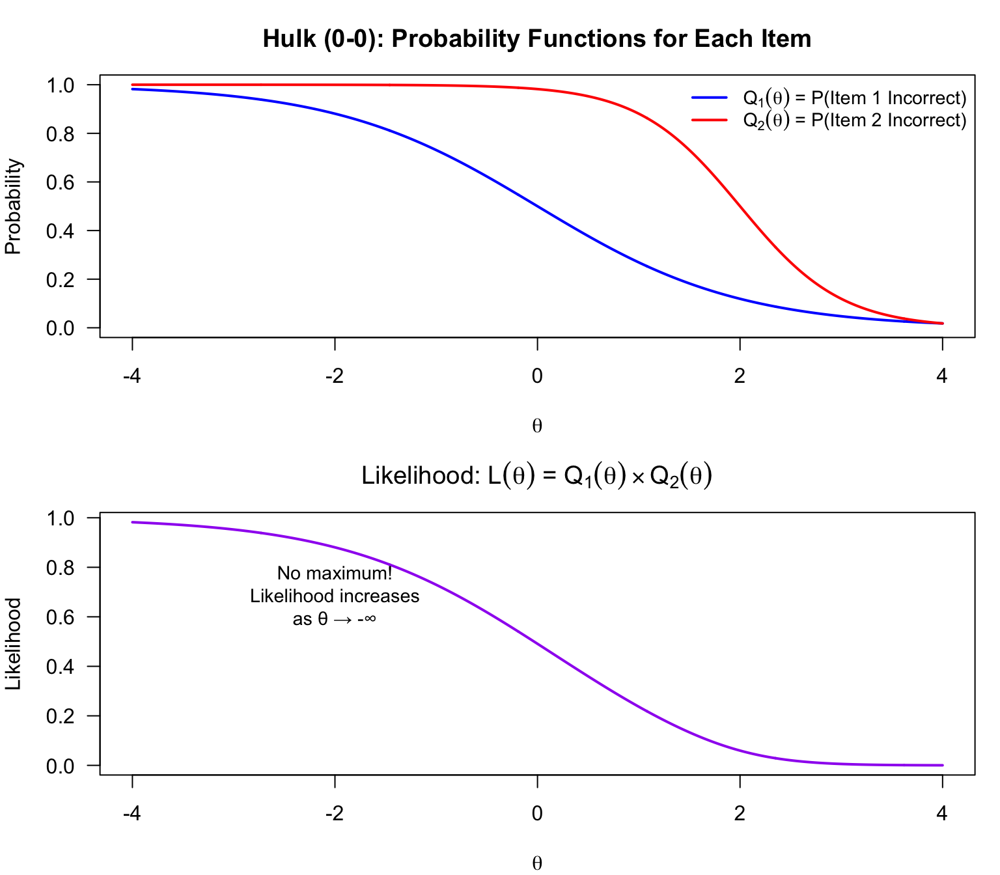
Same problem: No maximum exists. The likelihood keeps increasing as theta approaches negative infinity.
In practice, we don’t find the MLE graphically. Instead, we use iterative numerical methods. The Newton-Raphson algorithm is commonly used:
\[\theta^{(t+1)} = \theta^{(t)} - \frac{\ell'(\theta^{(t)})}{\ell''(\theta^{(t)})}\]
Where:
For the 2PL model:
\[\ell'(\theta) = \sum_{j=1}^{J} a_j (u_j - P_j(\theta))\]
\[\ell''(\theta) = -\sum_{j=1}^{J} a_j^2 P_j(\theta) Q_j(\theta)\]
The standard error of the MLE is derived from the Fisher information:
\[SE(\hat{\theta}) = \frac{1}{\sqrt{I(\hat{\theta})}}\]
Where the information function is:
\[I(\theta) = \sum_{j=1}^{J} a_j^2 P_j(\theta) Q_j(\theta)\]
Before observing any responses, what is our best guess about a test-taker’s theta? Under MLE, we have no way to answer this. However, if we assume test-takers are sampled from a population with a known distribution (typically standard normal), we can incorporate this information.
The posterior distribution combines the prior and the likelihood:
\[g(\theta | \mathbf{u}) = \frac{L(\mathbf{u} | \theta) \cdot f(\theta)}{\int L(\mathbf{u} | \theta) \cdot f(\theta) \, d\theta}\]
Where:
\[\hat{\theta}_{EAP} = \frac{\int \theta \cdot L(\mathbf{u} | \theta) \cdot f(\theta) \, d\theta}{\int L(\mathbf{u} | \theta) \cdot f(\theta) \, d\theta}\]
# Prior: standard normal
prior <- dnorm(theta_range, mean = 0, sd = 1)
# Posterior (unnormalized) for Wonder Woman
posterior_ww <- L_ww * prior
# MAP estimate
map_ww <- theta_range[which.max(posterior_ww)]
# Three vertically stacked plots
par(mfrow = c(3, 1), mar = c(4, 4, 3, 1))
# Panel 1: Both ICCs on same plot (the likelihood components)
plot(theta_range, p1, type = "l", col = "blue", lwd = 2,
xlab = expression(theta), ylab = "Probability",
main = "Wonder Woman (1-1): Probability Functions for Each Item",
ylim = c(0, 1), las = 1)
lines(theta_range, p2, col = "red", lwd = 2)
legend("right", legend = c(expression(P[1](theta)~"= P(Item 1 Correct)"),
expression(P[2](theta)~"= P(Item 2 Correct)")),
col = c("blue", "red"), lwd = 2, cex = 0.9, bty = "n")
# Panel 2: Prior distribution (population ability distribution)
plot(theta_range, prior, type = "l", col = "forestgreen", lwd = 2,
xlab = expression(theta), ylab = "Density",
main = expression("Prior Distribution: "*f(theta)*" = N(0, 1)"),
las = 1)
# Panel 3: Posterior distribution (product of likelihood and prior)
plot(theta_range, posterior_ww, type = "l", col = "purple", lwd = 2,
xlab = expression(theta), ylab = "Posterior (unnormalized)",
main = expression("Posterior: "*g(theta)*" "*proportional*" "*P[1](theta) %*% P[2](theta) %*% f(theta)),
las = 1)
abline(v = map_ww, lty = 2, col = "gray40")
text(map_ww + 0.5, max(posterior_ww) * 0.9,
paste("MAP =", round(map_ww, 2)), cex = 0.9)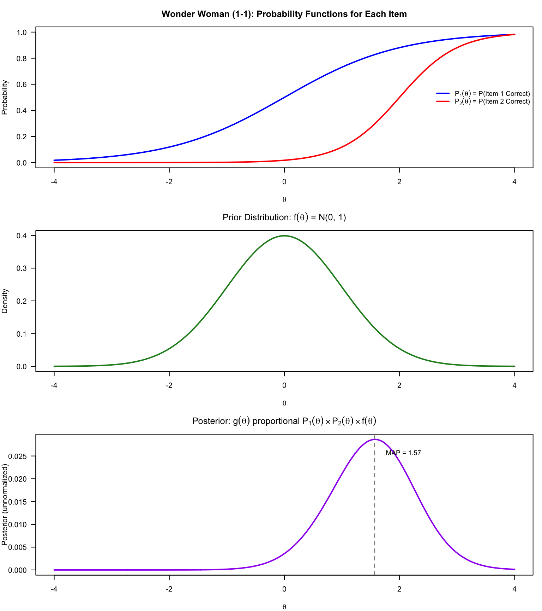
Key insight: By incorporating prior information, we now have a finite estimate for Wonder Woman! The prior distribution “pulls” the estimate back toward the population mean. Compare this to Case 3 above, where the likelihood alone had no maximum. The posterior is the product of the likelihood (from the ICCs) and the prior distribution—this multiplication creates a curve with a well-defined peak.
# Fit 2PL model
m2 <- mirt(cde, 1, itemtype = "2PL", verbose = FALSE)
# View item parameters
coef(m2, simplify = TRUE, IRTpars = TRUE)$items a b g u
V1 1.0211422 -1.05990398 0 1
V2 0.7825516 -1.31109802 0 1
V3 1.4241184 -0.58480336 0 1
V4 1.2041302 -1.02047790 0 1
V5 0.9336941 -0.38150283 0 1
V6 0.8671079 0.03393734 0 1
V7 0.7142823 -0.65593915 0 1
V8 0.9259754 -0.05083560 0 1
V9 1.9660439 -0.84714913 0 1
V10 1.1842197 -0.61070835 0 1
V11 1.1815007 -1.47967286 0 1
V12 1.9352373 -1.02575238 0 1
V13 1.1259578 -1.49222661 0 1
V14 0.7613313 -0.23334423 0 1
V15 1.2847495 -2.25061241 0 1
V16 2.0923349 -1.49677594 0 1
V17 1.0318098 -1.00092441 0 1
V18 0.7838470 -0.61447743 0 1
V19 1.5143618 -1.37192331 0 1
V20 1.2181657 1.31635095 0 1
V21 1.2647873 -0.58202952 0 1
V22 1.1222375 -0.58356842 0 1
V23 0.3470280 -0.12049909 0 1
V24 0.9412101 -0.09441439 0 1
V25 0.9776519 -1.15062054 0 1
V26 1.5042345 0.63980674 0 1
V27 1.0028072 0.20895607 0 1
V28 0.6360303 0.54449773 0 1
V29 0.9980535 1.62306946 0 1
V30 0.9011089 0.85502285 0 1
V31 0.5065158 1.90097806 0 1# Calculate total scores
tot <- apply(cde, 1, sum)
# Summary
cat("Total Score Distribution:\n")Total Score Distribution:summary(tot) Min. 1st Qu. Median Mean 3rd Qu. Max.
0.00 14.00 19.00 18.41 23.00 31.00 # Check for extreme scores
cat("\nNumber with score = 0:", sum(tot == 0))
Number with score = 0: 1cat("\nNumber with perfect score (31):", sum(tot == 31))
Number with perfect score (31): 2hist(tot, breaks = 30, col = "steelblue", border = "white",
main = "Distribution of Raw Scores",
xlab = "Total Score (out of 31)", las = 1)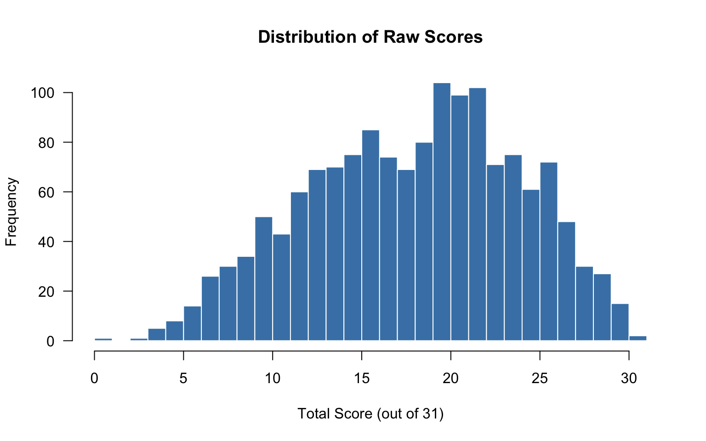
# MLE estimates
theta_mle <- fscores(m2, method = "ML", full.scores.SE = TRUE)
# EAP estimates
theta_eap <- fscores(m2, method = "EAP", full.scores.SE = TRUE)
# MAP estimates
theta_map <- fscores(m2, method = "MAP", full.scores.SE = TRUE)
# Combine into data frame
theta_df <- data.frame(
raw_score = tot,
mle = theta_mle[, 1],
mle_se = theta_mle[, 2],
eap = theta_eap[, 1],
eap_se = theta_eap[, 2],
map = theta_map[, 1],
map_se = theta_map[, 2]
)summary(theta_df$mle) Min. 1st Qu. Median Mean 3rd Qu. Max.
-Inf -0.76441 -0.01835 0.70545 Inf Notice the Inf and -Inf values for students with perfect and zero scores. This is a fundamental limitation of MLE.
par(mfrow = c(2, 2), mar = c(4, 4, 3, 1))
# Raw scores
hist(tot, breaks = 30, col = "steelblue", border = "white",
main = "Raw Scores", xlab = "Total Score", las = 1)
# MLE (excluding infinite values)
mle_finite <- theta_df$mle[is.finite(theta_df$mle)]
hist(mle_finite, breaks = 30, col = "coral", border = "white",
main = "MLE Theta Estimates", xlab = expression(theta), las = 1)
# EAP
hist(theta_df$eap, breaks = 30, col = "forestgreen", border = "white",
main = "EAP Theta Estimates", xlab = expression(theta), las = 1)
# MAP
hist(theta_df$map, breaks = 30, col = "purple", border = "white",
main = "MAP Theta Estimates", xlab = expression(theta), las = 1)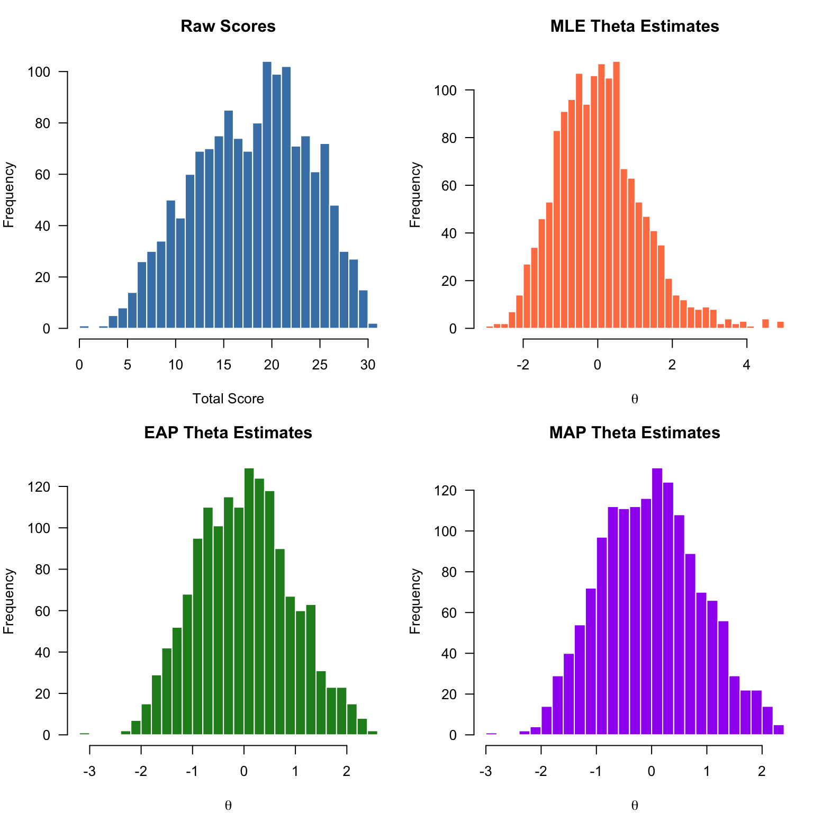
# Filter to finite MLE values
finite_idx <- is.finite(theta_df$mle)
# Standard deviations
cat("SD of MLE estimates:", round(sd(theta_df$mle[finite_idx]), 4), "\n")SD of MLE estimates: 1.1605 cat("SD of EAP estimates:", round(sd(theta_df$eap[finite_idx]), 4), "\n")SD of EAP estimates: 0.9166 The EAP estimates have less variability because they are “shrunk” toward the prior mean of 0.
# Correlation
cat("Correlation between MLE and EAP:",
round(cor(theta_df$mle[finite_idx], theta_df$eap[finite_idx]), 4))Correlation between MLE and EAP: 0.9875ggplot(theta_df[finite_idx, ], aes(x = mle, y = eap)) +
geom_point(alpha = 0.5, color = "steelblue") +
geom_abline(intercept = 0, slope = 1, linetype = "dashed", color = "red") +
labs(x = "MLE Theta", y = "EAP Theta",
title = "MLE vs. EAP Theta Estimates",
subtitle = "Dashed line shows y = x") +
theme_minimal() +
coord_equal()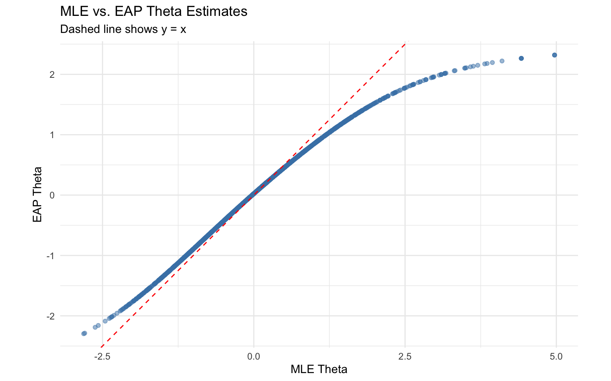
Note the non-linearity at the tails: EAP estimates are pulled toward the mean relative to MLE, especially for extreme scores.
ggplot(theta_df[finite_idx, ], aes(x = mle, y = mle_se)) +
geom_point(alpha = 0.5, color = "red") +
geom_point(aes(x = eap, y = eap_se), alpha = 0.5, color = "blue") +
labs(x = expression(theta), y = "Standard Error",
title = "Standard Errors: MLE (red) vs. EAP (blue)") +
theme_minimal() +
ylim(0.3, 0.8)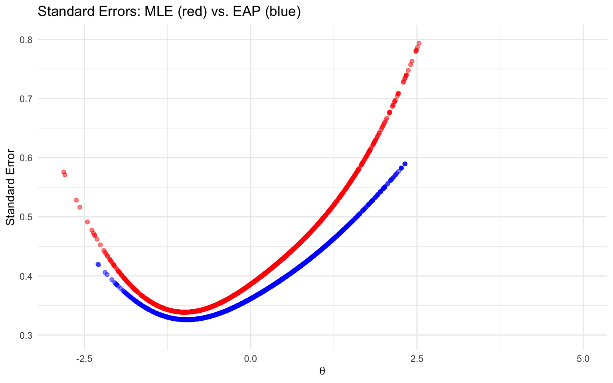
EAP standard errors tend to be slightly smaller than MLE standard errors.
For the 2PL model, the item information function is:
\[I_j(\theta) = a_j^2 P_j(\theta) Q_j(\theta)\]
Key properties:
# Extract item parameters
item_pars <- coef(m2, simplify = TRUE, IRTpars = TRUE)$items
# Calculate information for each item
theta_seq <- seq(-4, 4, by = 0.1)
info_matrix <- matrix(NA, nrow = length(theta_seq), ncol = nrow(item_pars))
for (j in 1:nrow(item_pars)) {
a <- item_pars[j, "a"]
b <- item_pars[j, "b"]
p <- p_2pl(theta_seq, a, b)
q <- 1 - p
info_matrix[, j] <- a^2 * p * q
}
# Plot a few items
plot(theta_seq, info_matrix[, 1], type = "l", col = 1, lwd = 2,
xlab = expression(theta), ylab = "Information",
main = "Item Information Functions (Selected Items)",
ylim = c(0, max(info_matrix)), las = 1)
for (j in c(5, 10, 15, 20, 25, 31)) {
lines(theta_seq, info_matrix[, j], col = j, lwd = 2)
}
legend("topright", legend = paste("Item", c(1, 5, 10, 15, 20, 25, 31)),
col = c(1, 5, 10, 15, 20, 25, 31), lwd = 2, cex = 0.8)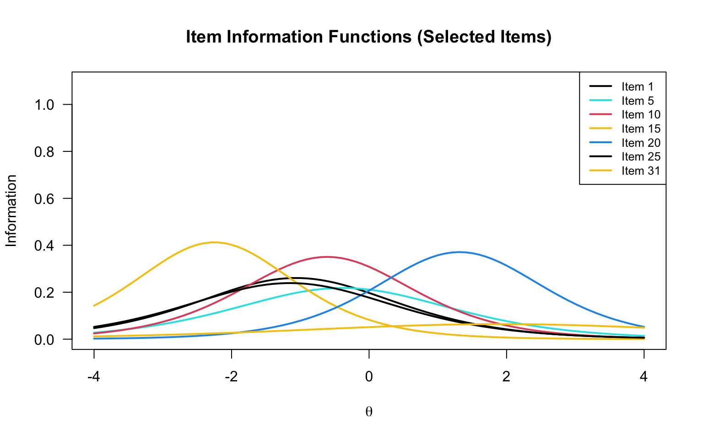
The test information function is simply the sum of item information functions:
\[I(\theta) = \sum_{j=1}^{J} I_j(\theta)\]
# Test information
test_info <- rowSums(info_matrix)
# Plot
plot(theta_seq, test_info, type = "l", col = "darkblue", lwd = 3,
xlab = expression(theta), ylab = "Information",
main = "Test Information Function (2PL)", las = 1)
abline(v = theta_seq[which.max(test_info)], lty = 2, col = "red")
text(theta_seq[which.max(test_info)] + 0.5, max(test_info) * 0.95,
paste("Max at θ =", round(theta_seq[which.max(test_info)], 2)))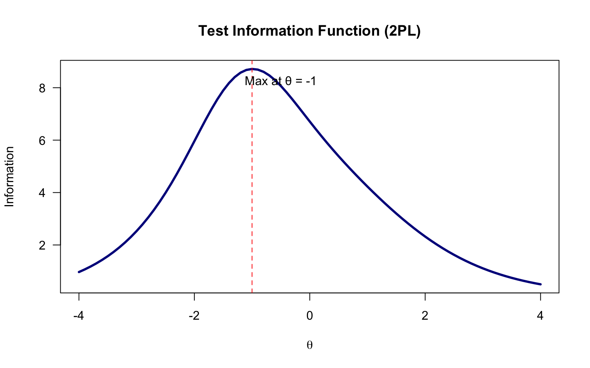
This test provides the most information for individuals scoring slightly below average.
The standard error of measurement (SEM) is inversely related to information:
\[SEM(\theta) = \frac{1}{\sqrt{I(\theta)}}\]
# Theoretical SEM
sem_theoretical <- 1 / sqrt(test_info)
par(mfrow = c(1, 2))
# Information
plot(theta_seq, test_info, type = "l", col = "darkblue", lwd = 2,
xlab = expression(theta), ylab = "Information",
main = "Test Information", las = 1)
# SEM
plot(theta_seq, sem_theoretical, type = "l", col = "darkred", lwd = 2,
xlab = expression(theta), ylab = "SEM",
main = "Standard Error of Measurement", las = 1)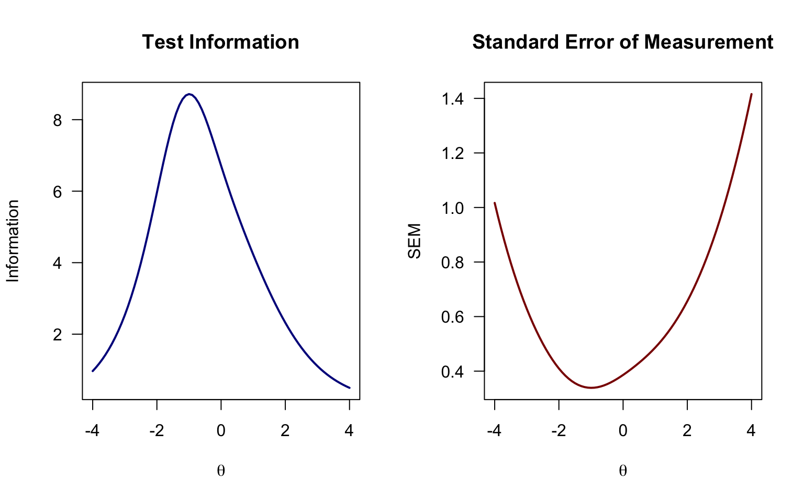
par(mfrow = c(1, 1))
# Plot theoretical SEM
plot(theta_seq, sem_theoretical, type = "l", col = "blue", lwd = 2,
xlab = expression(theta), ylab = "SEM",
main = "Theoretical vs. Empirical SEM",
ylim = c(0.2, 0.8), las = 1)
# Add empirical EAP SEs
points(theta_df$eap, theta_df$eap_se, col = "red", pch = 16, cex = 0.5)
legend("topright",
legend = c("Theoretical (1/√I)", "Empirical (EAP posterior SD)"),
col = c("blue", "red"), lwd = c(2, NA), pch = c(NA, 16))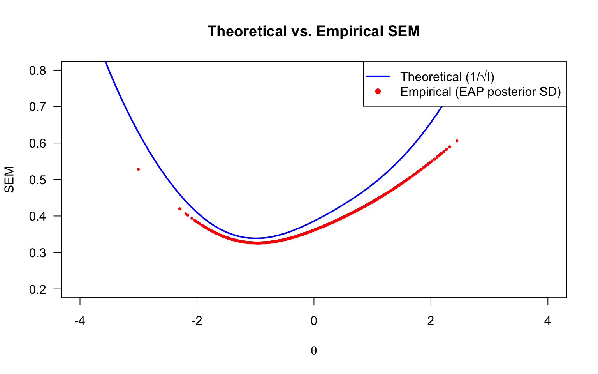
| Method | Advantages | Disadvantages |
|---|---|---|
| MLE | Unbiased; no prior assumptions required | Undefined for perfect/zero scores; larger variance |
| MAP | Handles extreme scores; mode of posterior | Requires prior specification |
| EAP | Handles extreme scores; minimum MSE; most commonly used | Requires prior specification; shrinkage toward mean |